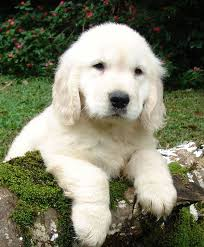

Woof! 🶠You've just stepped into the most pawsome corner of the internet—my portfolio, where creativity runs free like a pack of playful puppies! Each project you’ll find here is like a little pup, full of energy, personality, and wagging tails of enthusiasm. From fetching innovative designs to digging up the best coding solutions, I’ve put my best paw forward in every piece.
🶠Meet the Pack
Here’s where you can meet the pups—I mean, projects! Each one has its own unique bark, whether it’s a sleek web design or a dynamic app. Click on any of them to see how they came to life, from the first pawprint to the final wag of the tail.

Fetch Designs:
A showcase of my latest and greatest designs, tailored to catch eyes and warm hearts.
Code Tricks: Check out some clever coding projects that are as sharp as a Border Collie and just as fun to play with!
Puppy Pics: A gallery of images and graphics I’ve created—proof that every good project deserves a treat!
🾠My Training Grounds
Curious about where I’ve honed my skills? This section is like the obedience school of my portfolio. It’s where you’ll find my background, education, and the experiences that have helped shape me into the creative problem-solver I am today.
Subject
Day
Time
Lecturer
ICT502
Sunday
2:30pm - 5:30 pm
Mubashir
ICT502
Sunday
2:30pm - 5:30 pm
Mubashir
ICT502
Sunday
2:30pm - 5:30 pm
Mubashir
Education:
See where I’ve earned my stripes (and my treats) in the world of design and development.
Experience:
Learn about the projects I’ve worked on and the challenges I’ve tackled along the way.
🕠Let’s Play Fetch! – Contact Me
Got a project in mind? Want to collaborate? Or maybe you just want to chat about your favorite dog breeds? I’m all ears! 🐾
Contact Me:
Email: puppy@ict502.com
Social Media: Follow me on [social platforms] for more puppy pics and creative updates.